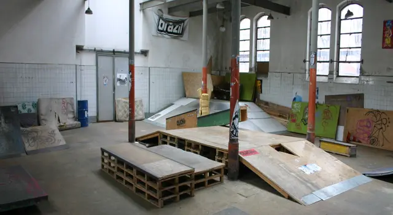
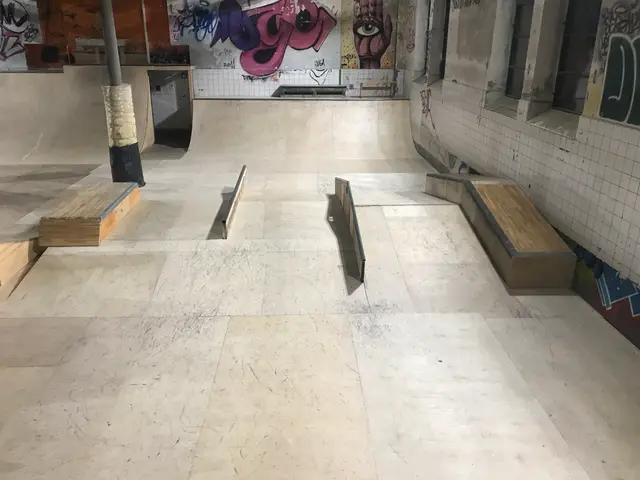

Skatepark couvert · depuis 2003
The Park N' Sun association
Le seul skatepark couvert du canton de Neuchâtel. Construit, entretenu et géré bénévolement depuis 2003 dans les anciens abattoirs de La Chaux-de-Fonds.
D'où vient le nom ?À l'époque
Il faisait froid.
Le bâtiment était mal isolé. En hiver, il faisait si froid que les riders grelottaient.

La blague
« Parkinson »
Les riders grelottaient et plaisantaient qu'ils avaient « Parkinson ».
Au-dessus des gradins
Le soleil du skatepark
Au-dessus des gradins, une énorme lampe chauffait fort : « le soleil du skatepark ».
[À FOURNIR : photo de la lampe et des gradins, année de l'anecdote]
Le nom
- « Parkinson » la blague
- le soleil la lampe
- Park'n Sun
Les deux ont donné Park'n Sun.
Aujourd'hui
Il fait chaud.
Depuis les rénovations, il fait chaud même en hiver, et la lampe a disparu.
Fin des rénovations, réouverture au public
Après des mois de rénovations, le skatepark est de nouveau ouvert au public. Les horaires restent inchangés : mercredi, samedi et dimanche, de 14h à 18h.

Un park en bois, fait à la main
Le park est entièrement en bois : les modules sont construits à la main par des bénévoles.
L'association Park N'Sun a pour objectif la promotion des sports de glisse urbains. Elle regroupe une vingtaine de membres âgés de 12 à 45 ans, qui construisent, entretiennent et gèrent bénévolement le skatepark couvert des anciens abattoirs municipaux depuis 2003.
- Skateboard
- Trottinette freestyle
- Roller
- BMX


Vidéo
Par où commencer ?
-
Viens rider
Horaires, events, Instagram.
- Horaires et tarifs
- Instagram @park_n_sun_
- Events (bientôt)
[À FOURNIR : prochains events]
-
Notre histoire
L'histoire du nom, le bowl, les archives.
- L'histoire du nom
- Le bowl, en hommage
- Historique (bientôt)
-
Pour les parents
Cours, sécurité, réservation.
- Réserver le park
- Cours de skate et de trottinette (bientôt)
[À FOURNIR : règles de sécurité du park (casque, protections, âge)]
-
Partenaires et projet
Entreprises, marques, Ville.
- Partenaires (bientôt)
- Projet de rénovation (bientôt)
[À FOURNIR : projet des anciens abattoirs pour Capitale culturelle 2027] [À FOURNIR : collaboration El Tony Mate, vendu au skatepark]